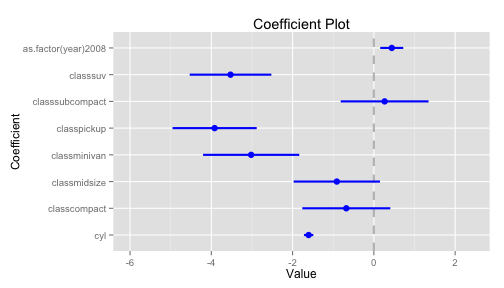
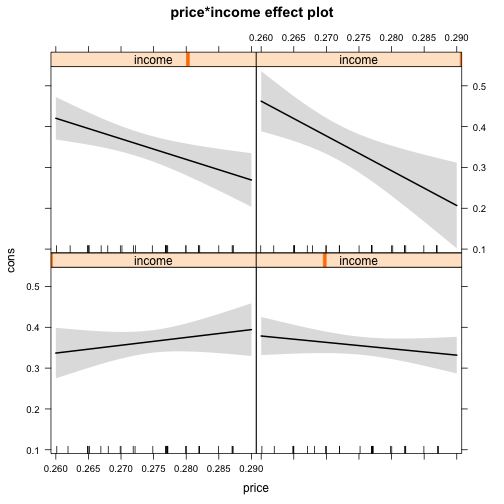
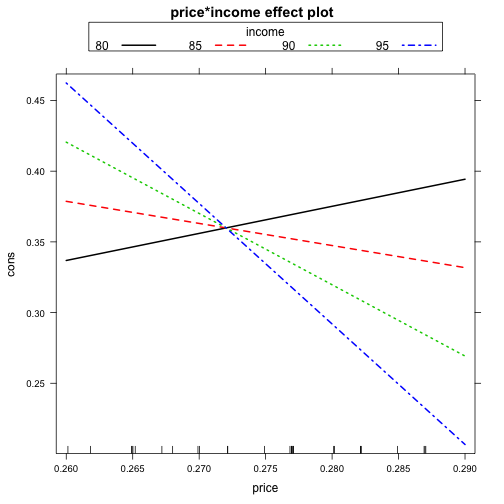

Let's start by going through Problem Set 3.
Let's start by going through Problem Set 3.
library(dplyr)
flights <- tbl_df(read.csv("~/Dropbox/R_wav/data/flights.csv"))
ob1 <- mutate(flights,caughtup=dep_delay-arr_delay)
ob2 <- group_by(ob1,carrier)
ob3 <- summarise(ob2,mean_caughtup=mean(caughtup,na.rm=T))
ob4 <- arrange(ob3,desc(mean_caughtup))
flights %>%
mutate(caughtup=dep_delay-arr_delay) %>%
group_by(carrier) %>%
summarise(mean_caughtup=mean(caughtup,na.rm=T)) %>%
arrange(desc(mean_caughtup)) -> carrierscaughtup
head(carrierscaughtup)
## Source: local data frame [6 x 2]
##
## carrier mean_caughtup
## 1 WN 5.849313
## 2 AA 5.516048
## 3 EV 5.074493
## 4 MQ 3.902753
## 5 B6 3.542348
## 6 DL 3.191818
load(url("http://cdn.rawgit.com/ylelkes/R_wav/master/data/mammals.RData"))
load(url("http://cdn.rawgit.com/ylelkes/R_wav/master/data/speedcbsa.RData"))
Start by using dcast to reshape the data to remove any data that does not have complete data, i.e., is missing data for some years. Hint: Years will be your column data, and use na.omit.
The melt the data back to long format.
load(url("http://cdn.rawgit.com/ylelkes/R_wav/master/data/countydems.RData"))
Now aggregate the data up to the cbsa-level. You can use either dcast or dplyr for this
Calculate a new variable that indicates the population per square mile using mutate.
library(lme4)
lmer(y~x1+x2+x3+as.factor(year)+(1|cbsa),data)
library(coefplot)
reg1 <- lm(cty~cyl+class+as.factor(year),mpg)
coefplot(reg1,intercept = F)

library(effects)
library(Ecdat)
data(Icecream)
r1 <- lm(formula = cons ~ price * income, data = Icecream)
eff1 <- effect(r1,term="price*income")
plot(eff1)
plot(eff1,multiline=T)
 
load(url("http://cdn.rawgit.com/ylelkes/R_wav/master/data/threeway.RData"))